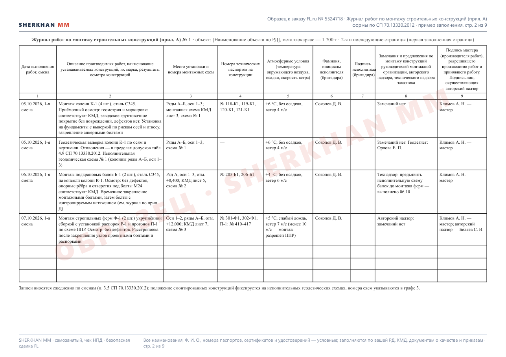
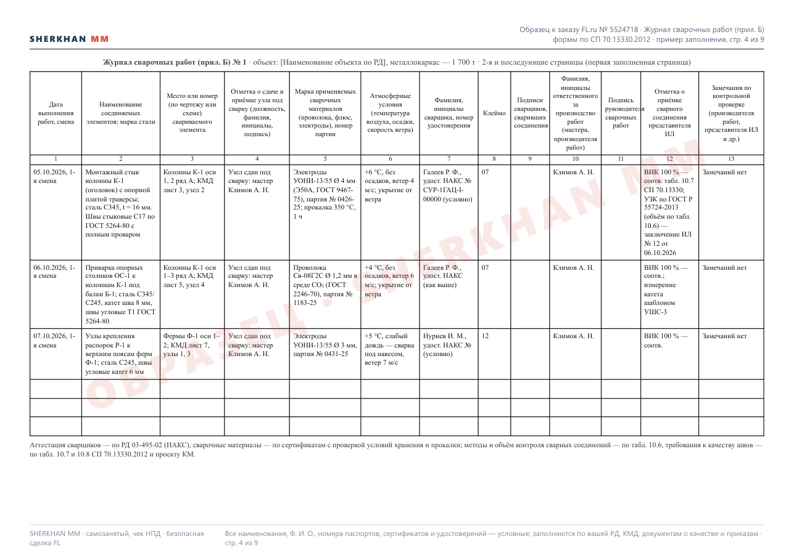
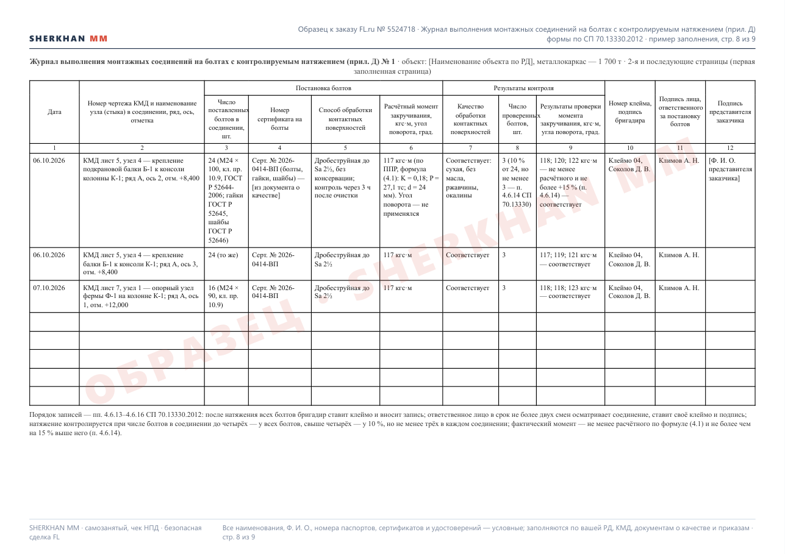

Образец по заказу FL.ru № 5524718: первые заполненные страницы всех пяти специальных журналов по монтажу металлоконструкций (1 700 т) по обязательным формам СП 70.13330.2012 — журнал работ по монтажу строительных конструкций (прил. А), журнал сварочных работ (прил. Б), журнал антикоррозионной защиты сварных соединений (прил. В), журнал выполнения монтажных соединений на болтах с контролируемым натяжением (прил. Д), журнал контрольной тарировки динамометрических ключей (прил. Е). Титульные листы, списки ИТР и сварщиков, ссылки на пункты СП в записях. Наименования, Ф. И. О. и номера документов — условные, заполняются по вашей рабочей документации, КМД, документам о качестве и приказам.


